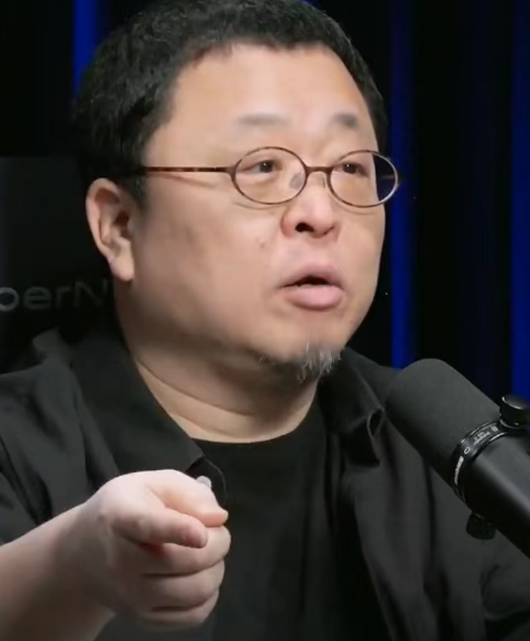
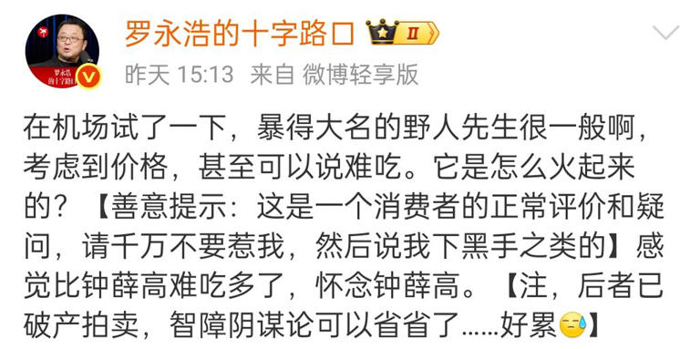

近日，知名公众人物罗永浩在个人社交账号上发文，分享了自己的一次消费体验。他直言在机场试吃了近期颇具热度的冰淇淋品牌“野人先生”后，感觉口感很一般，考虑到其单球28元的定价，甚至可以说“难吃”。这条帖子迅速引爆网络，不仅引发了关于网红冰淇淋定价与品质的广泛讨论，也让品牌方“野人先生”陷入了舆论的风口浪尖。
在这条引发热议的帖文中，罗永浩不仅对“野人先生”的口感提出了质疑，还特意拉出了曾经的“雪糕刺客”钟薛高作为对比。他直言“感觉比钟薛高难吃多了，怀念钟薛高”，并补充说明钟薛高目前已经破产拍卖，借此提前堵住可能出现的“阴谋论”猜测。
值得注意的是，罗永浩在文中还特意加上了一段“善意提示”：“这是一个消费者的正常评价和疑问，请千万不要惹我，然后说我下黑手之类的。”这种充满个人风格的“叠甲”式发言，既表明了自己作为消费者的评价立场，也带着几分调侃的意味。
面对罗永浩的公开吐槽，目前拥有超1400家门店的“野人先生”并未选择正面硬刚。据媒体报道，品牌官方客服在接到记者询问时表示，会将相关问题记录并反馈给领导，但暂不确定品牌是否会公开回应。截至目前，品牌方官方账号依然保持沉默。

